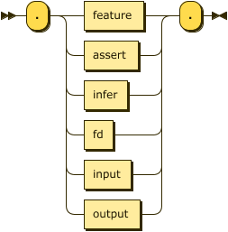
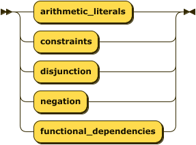
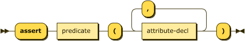
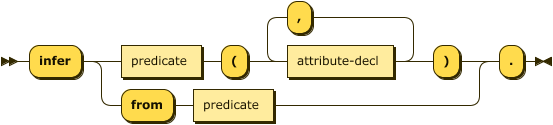
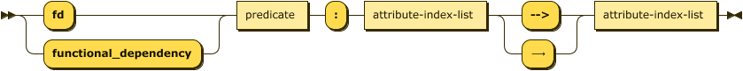

Datalog Text Representation
Version: XX March 2022 (Draft)
Please check the errata for any errors or issues reported since publication.
The English version of this specification is the only normative version. Non-normative translations may also be available.
Abstract
This document defines a standard textual representation of a Datalog program. This allows a program to be completely written in a compact and natural text form, with abbreviations for common usage patterns and data-types.
Status of This Document
This section describes the status of this document at the time of its publication. Other documents may supersede this document.
Introduction
How to Read This Document
This section is non-normative.
TBD
Contributing
This section is non-normative.
TBD
Terminology
This section is non-normative.
- Document –
- Representation –
- Safety –
Conformance
As well as sections marked as non-normative, all authoring guidelines, diagrams, examples, and notes in this specification are non-normative. Everything else in this specification is normative.
The keywords MAY, MUST, MUST NOT, RECOMMENDED, SHOULD, and SHOULD NOT in this document are to be interpreted as described in BCP 14 RFC2119 RFC8174 when, and only when, they appear in all capitals, as shown here.
Media Type and Content Encoding
The media type of Datalog text document is application/vnd.datalog+text. The content encoding of a Datalog text document is always UTF-8.
The optional “features” parameter allows the transport to identify language features used within the representation. The value of this parameter is a comma-separated list of feature identifiers supported by this specification.
Therefore, the type application/vnd.datalog+text;features=negation denotes a document with the following processing instruction.
.features(negation).
The purpose of this parameter is to save a client from having to parse a document if the features identified in the parameter are unsupported by them.
Basic Concepts
A Datalog Program $\small P$ is a tuple comprising the Extensional database, EDB, or $\small D_{E}$, the Intensional database, IDB, or $\small D_{I}$, and a set of queries $\small Q$.
$$\tag{0}\small P=( D_E, D_I, Q )$$
The extensional database in turn is a set of relations each of which is a set of facts (ground atoms). The intensional database is a set of rules that derive additional facts into intensional relations via entailment.
Every relation $\small r$ has a schema that describes a set of attributes $\small \lbrace \alpha_1, \ldots, \alpha_j \rbrace$, and each attribute may be labeled, and may also have a type. In general, we refer to attributes by index, a value in $\small 1, \cdots, j$.
Datalog Rules $\small R$ are built from a language $\small \mathcal{L}=( \mathcal{C},\mathcal{P},\mathcal{V})$ that contains the
- $\small \mathcal{C}$ — the finite sets of symbols for all constant values; e.g. hello, “hi” 123,
- $\small \mathcal{P}$ — the finite set of alphanumeric character strings that begin with a lowercase character; e.g. human, size, a,
- $\small \mathcal{V}$ — the finite set of alphanumeric character strings that begin with an uppercase character; e.g. X, A, Var.
Atoms are comprised of a label, $\small p \in \mathcal{P}$, and a tuple of terms. A set of atoms form a Relation if each conforms to the schema of the relation. The form of an individual atom is as follows:
$$\tag{ix}\small p(t_1, \ldots, t_k)$$
Terms, mentioned above, may be constant values or variables such that $\small\mathcal{T}=\mathcal{C}\cup\mathcal{V}\cup\bar{t}$ where $\small\bar{t}$ represents an anonymous variable.
Literals within the body of a rule, represent sub-goals that are the required to be true for the rule’s head to be considered true. A literal may be an atom (termed a relational literal) or, in $\small\text{Datalog}^{\theta}$, a conditional expression (termed an arithmetic literal),
Any ground rule where $\small m=1$ and where $\small n=0$ is termed a Fact as it is true by nature of having an empty body, or alternatively we may consider the body be comprised of the truth value $\small\top$.
An atom may be also used as a Goal or Query clause in that its constant and variable terms may be used to match facts from the known facts or those that may be inferred from the set of rules introduced. A ground goal is simply determining that any fact exists that matches all the constant values provided and will return true or false. In the case that one or more variables exist a set of facts will be returned that match the expressed constants and provide the corresponding values for the variables.
Datalog Document Grammar
A Datalog document is a UnicodeUNICODE character string encoded in UTF-8. Unicode code points only in the range U+0 to U+10FFFF inclusive are allowed.
White space (tab U+0009 or space U+0020) is used to separate two terminals which would otherwise be (mis-)recognized as one terminal. White space is significant in the production STRING_LITERAL_QUOTE.
Comments in a Datalog document take the form of % and continue to the end of line (EOL) or end of file if there is no end of line after the comment marker.
Comments are treated as white space.
The EBNF used here is defined in XML 1.0 EBNF-NOTATION with the addition that each rule in the grammar ends with a semicolon character ;.
symbol ::= expression ";"
Programs
A program consists of a set of facts that comprise the extensional database, a list of rules that comprise the intensional database, and possibly a set of queries to interrogate the result of any reasoning performed over the program.

program ::= pragma* ( fact | rule | query )* ;
A program consists of a single file containing facts, rules, and queries as well as any additional files referenced via pragmas.
Facts
Facts must be expressed in the form of ground atoms and so they have a specific rule rather than a constrained form of the atom rule.

fact ::= predicate ( "(" constant ( "," constant )* ")" )? "." ;
A predicate is the identifier shared by a fact and relation.

predicate
::= LC_ALPHA ( ALPHA | DIGIT | "_" )* ;
Example – the following demonstrates a simple fact denoting that the constant brooke representing some
individual is the parent of some individual represented by the constant "Xerces".
parent("Xerces", brooke).
Constant Values
Constants are supported in three types, String, Numbers, and Boolean. Whereas some definitions of
Datalog introduce an additional Identifier type, ASDI treats these as short strings that can
safely be expressed without quotes; therefore, the values xerces and "xerces" are equivalent.

constant
::= string | number | boolean ;
Strings
Strings are described in both the identifier and quoted form in the string rule.

string ::= predicate ( ":" ALPHA ( ALPHA | DIGIT | "_" * )? )
| DQUOTE [^\u{22}]* DQUOTE ;
Numbers
Numeric values in ASDI take one of three forms, integers, decimal values, and floating point values.
Currently, decimal types are not implemented.

number ::= float | decimal | integer
Integer values in ASDI are signed, 64-bit values (i64).

integer ::= ( "+" | "-" )? DIGIT+
Decimal values in ASDI are … TBD.

decimal ::= integer "." DIGIT+
Floating point values in ASDI are 65-bit IEEE floats (f64).

float ::= decimal ( "e" | "E" ) integer
Booleans
Boolean values may also be represented using ⊤ (down tack \u{22a4}) for true, and ⊥ (up tack
\u{22a5}) for false where this may improve readability.

boolean ::= ( "true" | "⊤" ) | ( "false" | "⊥" ) ;
Rules
As facts are syntactically distinct from rules in the text representation there is no need for empty
bodies – all rules must have at least one literal. Material implication may be written using
the Unicode character ⟵ (long leftwards arrow\u{27f5}).

rule ::= ( head | "⊥" )? ( ":-" | "<-" | "⟵" ) body "." ;
The head of a rule is a disjunction of atoms, or in the case of a constraint the head may is
optional or replaced by the value "⊥".

head ::= ( atom ( ( ";" | "|" | "OR" | "∨" ) atom )* ) ;
The body of a rule is comprised of one, or more, literals.

body ::= literal ( ( "," | "&" | "AND" | "∧" ) literal )* ;
Example – the following sets of rules are equivalent.
ancestor(X, Y) :- parent(X, Y).
ancestor(X, Y) <- parent(X, Y).
ancestor(X, Y) ⟵ parent(X, Y).
movie_star(X) :- star(X) , movie_cast_member(X, _, _).
movie_star(X) :- star(X) & movie_cast_member(X, _, _).
movie_star(X) :- star(X) AND movie_cast_member(X, _, _).
movie_star(X) :- star(X) ∧ movie_cast_member(X, _, _).
Example – as described in the abstract syntax it is an error to use an extensional relation in the head of a rule. The following will generate an error:
parent("Xerces", brooke).
parent(X,Y) :- father(X,Y).
The language feature disjunction corresponds to the language $\small\text{Datalog}^{\lor}$ and
allows multiple atoms to appear in the rule’s head with the semantics that these are choices. This
syntax will not be accepted unless the feature is enabled.
Example – the following describes the rule that if X is a parent then X is either a father or mother.
.feature(disjunction).
father(X) ; mother(X) :- parent(X).
father(X) | mother(X) :- parent(X).
father(X) OR mother(X) :- parent(X).
father(X) ⋁ mother(X) :- parent(X).
As the use of disjunction in this position in the head is inclusive it is considered that any rule as above can be transformed into the following standard form. Clearly, in this case this is not the expected semantics which would require an exclusive disjunction, the language $\small\text{Datalog}^{\oplus}$. Because the semantics may cause such confusion ASDI does not do this transformation by default.
father(X) :- parent(X).
mother(X) :- parent(X).
The language feature constraints corresponds to the language $\small\text{Datalog}^{\Leftarrow}$ and
allows the specification of rules with no head. In this case the material implication symbol is
required, the falsum value is optional for readability, therefore the following rules are
equivalent.
.feature(constraints).
:- alive(X) AND dead(X).
⊥ ⟵ alive(X) ∧ dead(X).
Safety
ASDI will disallow the addition of rules that are unsafe according to the abstract syntax. The following are examples of unsafe rules:
a(X) :- b(Y).— becauseXappears as a distinguished variable but does not appear in a positive relational literal, errorHeadVariablesMissingInBody.a(X) :- b(Y), NOT b(X).— becauseXappears in a negated literal but does not appear in a positive relational literal, errorNegativeVariablesNotAlsoPositive.a(X) :- b(Y), X < Y.— BecauseXappears in an arithmetic literal but does not appear in a positive relational literal, errorArithmeticVariablesNotAlsoPositive.
Atoms
The text representation of an atom is a relatively simple translation from the abstract syntax above.

atom ::= predicate "(" term ( "," term )* ")" ;

term ::= variable | constant ;
Note that we explicitly separate variables into named and anonymous forms here.

variable
::= named-variable | anon-variable ;

named-variable
::= UC_ALPHA ( ALPHA | DIGIT | "_" )* ;
anon-variable
::= "_" ;
Example – the following are all valid body atoms.
dead(julius_caesar).
emperor(julius_caesar, rome).
emperor(X, Y).
emperor(X, rome).
Literals
Any valid atom is also a valid positive relational literal. The syntax below also allows for negative
literals as well as arithmetic expressions as literals. Conjunction may be written with the Unicode
character ∧ (logical and \u{2227}).

literal ::= ( "!" | "NOT" | "￢" )? ( atom | comparison ) ;
Example – the following rules are all equivalent.
ancestor(X, Y) ⟵ parent(X, Z) , ancestor(Z, Y).
ancestor(X, Y) ⟵ parent(X, Z) & ancestor(Z, Y).
ancestor(X, Y) ⟵ parent(X, Z) ∧ ancestor(Z, Y).
ancestor(X, Y) ⟵ parent(X, Z) AND ancestor(Z, Y).
The language feature negation corresponds to the language $\small\text{Datalog}^{\lnot}$ and
allows the specification of negated literals. Negation may also be written using the Unicode
character ￢ (full-width not sign \u{ffe2}). The following rules are equivalent.
.feature(negation).
alive(X) :- person(X), NOT dead(X).
alive(X) ⟵ person(X) ∧ ￢dead(X).
The following will fail as the negated rule is not considered safe ([Error::NegativeVariablesNotAlsoPositive]).
.feature(negation).
alive(X) :- NOT dead(X).
alive(X) ⟵ ￢dead(X).
Arithmetic Literals
The language feature comparisons corresponds to the language $\small\text{Datalog}^{\theta}$ and
allows the use of arithmetic literals. Comparisons take place between two literals and are
currently limited to a set of common operators. Note the addition of a string match operator, this
is similar to the Perl =~ and requires a string value/variable on the left and a string value or
variable on the right that compiles to a valid Rust regular expression. Finally, the rule named-term
disallows the use of anonymous variables in arithmetic literals.

comparison
::= ( named-variable | constant ) operator ( named-variable | constant ) ;

operator
::= "="
| ("!=" | "/=" | "≠")
| "<"
| ("<=" | "≤")
| ">"
| (">=" | "≥")
| ("*=" | "≛" | "MATCHES") ;
The Unicode characters ≠ (not equal to \u{2260}), ≤ (less-than or equal to \u{2264}),
≥ (greater-than or equal to \u{2265}, and star equals \u{e2899b}) may be substituted for the
common arithmetic and string operators.
All arithmetic operations must be between terms of the some type, such that the property compatible introduce above is defined as:
$$\tag{xvi}\small compatible(\tau_{lhs}, \tau_{rhs}, \theta) \leftarrow \tau_{lhs} = \tau_{rhs}$$
Additionally, some operators are not present for all types, as shown in the table below.
| Type | =, ≠ | <, ≤, >, ≥ | ≛ |
|---|---|---|---|
| String | Yes | Yes - lexical | Yes |
| Integer | Yes | Yes | No |
| Boolean | Yes | No | No |
Example – the following is an example using arithmetic literals and the car relation.
.feature(comparisons).
.assert car(make: string, model: string, age: integer).
antique(X, Y) :- car(X, Y, _) AND X *= "[dD]uesenberg".
antique(X, Y) :- car(X, Y, _) AND Y = "model t".
antique(X, Y) :- car(X, Y, Z) AND Z > 50.
Queries
A query is simply an atom, but one identified to the system as a goal with either the prefix ?-
or the suffix ?.

query ::= ( "?-" atom "." ) | ( atom "?" ) ;
Example – the following queries are equivalent and will return the value of the variable X for any facts in
the ancestor relationship where the first attribute is the string value "xerces".
?- ancestor(xerces, X).
ancestor(xerces, X)?
When the value _ is used in a query it denotes an attribute of the relation that has no meaning
in either the query or the response. For example, in the following query we ask for all values of
the model attribute in the car relation where the make is “ford”, and ignore the age entirely.
.assert car(make: string, model: string, age: integer).
car("ford", X, _)?
The results of this query would not include the age column:
+------------+
| model |
+============+
| edge |
+------------+
| escort |
+------------+
| fiesta |
+------------+
| focus |
+------------+
| fusion |
+------------+
| mustang |
+------------+
...
Pragmas
Pragmas are declarative statements meant for the parser and runtime tooling, they do not affect the meaning of the program itself.

pragma ::= "." ( feature | assert | infer | fd | input | output ) "." ;
pragma feature
The feature pragma determines which Datalog language is in use. Use of syntax not supported by the
selected language feature will result in errors.

feature ::= "feature" "(" feature-id ( "," feature-id )* ")" ;

feature-id
::= "comparisons"
| "constraints"
| "disjunction"
| "negation"
| "functional_dependencies"
Example
.feature(negation).
.feature(comparisons, disjunction).
pragma assert
The assert pragma describes a new relation in the extensional database. The parser can determine
the schema for facts from their types in the database. The use of this pragma is therefore optional,
but recommended.

assert ::= "assert" predicate "(" attribute-decl ( "," attribute-decl )* ")" ;

attribute-decl
::= ( predicate ":" )? ( "boolean" | "integer" | "string" ) ;
Example
.assert human(name: string).
pragma infer
The infer pragma describes a new relation in the intensional database. Typically the parser
can determine the schema for relational literals from their context, The use of this pragma
is therefore optional, but recommended. The alternate form is more explicit in that it defines
an intensional relation in terms of a previously defined extensional relation.

infer ::= "infer"
( predicate "(" attribute-decl ( "," attribute-decl )* ")" )
| "from" predicate ;
Example
.infer mortal(name: string).
Alternatively the short-cut form is often more convenient.
.assert human(name: string).
.infer mortal from human.
pragma fd
The fd pragma, short for functional dependency, introduces a relationship between one or more attributes on the
left-hand (determinant) side and one or more attributes on the right-hand (dependent) side. This relationship denotes
that for a relationship $\small R$ with attributes $\small a_1, \cdots, a_n$, every valid combination of determinant
values uniquely determines the value of the dependent values.
Note that this pragma is only valid if the corresponding language feature is enabled.

fd ::= ( "fd" | "functional_dependency" )
predicate ":"
attribute-index-list ( "-->" | "⟶" ) attribute-index-list

attribute-index-list
::= attribute-index ( "," attribute-index )*
An attribute index is either an attribute label, if one has been declared for the relation, or an integer $\small i \in [1,|schema(R)|]$.

attribute-index
::= integer | predicate
Constraints – given the notational form $\small R: \alpha \rightarrow \Beta$;
- the initial predicate must be the label of an extensional relation: $$\small R \in D_I \land label(R)$$
- the set of attribute identifiers comprising the set $\small \alpha$ must be in $\small R$: $$\small \forall a \in \alpha (a \in schema(R))$$
- the set of attribute identifiers comprising the set $\small \Beta$ must be in $\small R$: $$\small \forall a \in \Beta (a \in schema(R))$$
- the same attribute identifier must not appear in both determinant and dependent: $$\small \alpha \cap \Beta = \emptyset$$
Example – given the extensional relation employee the two functional dependencies in the following are equivalent. Note that the implementation will ignore such duplicate declarations.
.feature(functional_dependencies).
.assert employee(id:integer, name:string).
.fd employee: id --> name.
.fd employee: 1 ⟶ 2.
pragma input
The input pragma instructs the parser to load facts for the named extensional relation from an
external file. This pragma requires that the relation be previously defined via the assert
pragma.
input ::= "input" io-details "."

io-details
::= "(" predicate "," quoted-string ( "," quoted-string )? ")" ;
Example
.assert human(name: string).
.input(human, "data/humans.csv", "csv").
pragma output
The output pragma instructs the parser to write facts from the named intensional relation to an
external file. This pragma requires that the relation be previously defined via the infer
pragma.

output ::= "output" io-details "." ;
Example
.infer mortal(name: string).
.output(mortal, "data/mortals.txt").
Comments
Comments in Datalog are either 1) the % character and continue to the end of the line, or
2) C-style with /* to start and */ to end. These correspond to the same rules as Prolog.

comment ::= "%" [^\r\n]* EOL
| "/" "*" ( [^\*] | "*"+ [^\*\/] )* "*"+ "/" ;
Example
% Here's a comment
?- ancestor(xerces, X). % and another
?- ancestor(brooke /* and one inline */, X). % and another
Terminal (Lexical) Symbols
The following are lexical rules that can be assumed by the rules above.
EOL ::= "\n" | "\r\n" | "\r" ;
WHITESPACE
::= " " | "\t" | EOL ;
DQUOTE
::= '"' ;
LC_ALPHA
::= ? corresponds to the Unicode category 'Ll' (letter, lower case) ? ;
UC_ALPHA
::= ? corresponds to the Unicode category 'Lu' (letter, upper case) ? ;
ALPHA ::= LC_ALPHA | UC_ALPHA ;
DIGIT ::= ? corresponds to the Unicode category 'Nd' (decimal number) ? ;
Dataset Processing
Appendix: EBNF
The EBNF used here is defined in XML 1.0 EBNF-NOTATION with the addition that each rule in the grammar ends with a semicolon character ;.
program ::= processing-instruction* ( fact | rule | query )* ;
/* ************************************************************************* */
fact ::= predicate ( "(" constant ( "," constant )* ")" )? "." ;
predicate
::= LC_ALPHA ( ALPHA | DIGIT | "_" )* ;
/* ************************************************************************* */
constant
::= string | number | boolean ;
string ::= predicate ( ":" ALPHA ( ALPHA | DIGIT | "_" * )? )
| DQUOTE [^#x22]* DQUOTE ;
number ::= float | decimal | integer ;
integer ::= ( "+" | "-" )? DIGIT+ ;
decimal ::= integer "." DIGIT+ ;
float ::= decimal ( "e" | "E" ) integer ;
boolean ::= ( "true" | "⊤" ) | ( "false" | "⊥" ) ;
/* ************************************************************************* */
rule ::= ( head | "⊥" )? ( ":-" | "<-" | "⟵" ) body "." ;
head ::= ( atom ( ( ";" | "|" | "OR" | "∨" ) atom )* ) ;
body ::= literal ( ( "," | "&" | "AND" | "∧" ) literal )* ;
/* ************************************************************************* */
atom ::= predicate "(" term ( "," term )* ")" ;
term ::= variable | constant ;
variable
::= named-variable | anon-variable ;
named-variable
::= UC_ALPHA ( ALPHA | DIGIT | "_" )* ;
anon-variable
::= "_" ;
/* ************************************************************************* */
literal ::= ( "!" | "NOT" | "￢" )? ( atom | comparison ) ;
/* ************************************************************************* */
comparison
::= operand operator operand ;
operand ::= ( named-variable | constant ) ;
operator
::= "="
| ("!=" | "/=" | "≠")
| "<"
| ("<=" | "≤")
| ">"
| (">=" | "≥")
| ("*=" | "≛" | "MATCHES") ;
/* ************************************************************************* */
query ::= ( "?-" atom "." ) | ( atom "?" ) ;
/* ************************************************************************* */
processing-instruction
::= "."
( pi-feature | pi-assert | pi-infer | pi-fd | pi-input | pi-output )
"." ;
pi-feature
::= "feature" "(" feature-id ( "," feature-id )* ")" ;
feature-id
::= "comparisons"
| "constraints"
| "disjunction"
| "negation"
| "functional_dependencies" ;
pi-assert
::= "assert" predicate "(" attribute-decl ( "," attribute-decl )* ")" ;
attribute-decl
::= ( predicate ":" )? ( "boolean" | "integer" | "string" ) ;
pi-infer
::= "infer"
( predicate "(" attribute-decl ( "," attribute-decl )* ")"
| "from" predicate ) "." ;
pi-fd ::= ( "fd" | "functional_dependency" )
predicate ":"
attribute-index-list ( "-->" | "⟶" ) attribute-index-list ;
attribute-index-list
::= attribute-index ( "," attribute-index )* ;
attribute-index
::= integer | predicate ;
pi-input
::= "input" io-details ;
io-details
::= "(" predicate "," quoted-string ( "," quoted-string )? ")" ;
pi-output
::= "output" io-details ;
/* ************************************************************************* */
comment ::= "%" [^\r\n]* EOL
| '/*' ( [^*] | '*'+ [^*/] )* '*'* '*/' ;
/* ************************************************************************* */
EOL ::= "\n" | "\\r\\n" | "\r" ;
WHITESPACE
::= " " | "\t" | EOL ;
DQUOTE ::= #x22 ;
LC_ALPHA
::= ? corresponds to the Unicode category 'Ll' ? ;
UC_ALPHA
::= ? corresponds to the Unicode category 'Lu' ? ;
ALPHA ::= LC_ALPHA | UC_ALPHA ;
DIGIT ::= ? corresponds to the Unicode category 'Nd' (decimal number) ? ;
Appendix: International Considerations
Appendix: IANA Considerations
Appendix: References
-
EBNF-NOTATIONTim Bray; Jean Paoli; C. M. Sperberg-McQueen; Eve Maler; François Yergeau. EBNF Notation 26 November 2008. W3C Recommendation. URL: http://www.w3.org/TR/REC-xml/#sec-notation
-
RFC2119S. Bradner. Key words for use in RFCs to Indicate Requirement Levels. March 1997. IETF. Best Current Practice. URL: https://tools.ietf.org/html/rfc2119
-
RFC8174B. Leiba. Ambiguity of Uppercase vs Lowercase in RFC 2119 Key Words. May 2017. IETF. Best Current Practice. URL: https://tools.ietf.org/html/rfc8174
-
UNICODEThe Unicode Standard. URL: http://www.unicode.org/versions/latest/
Datalog Text Representation – Errata
Version: XX March 2022.
None.
Datalog Text Representation – Translations
Version: XX March 2022.
None.